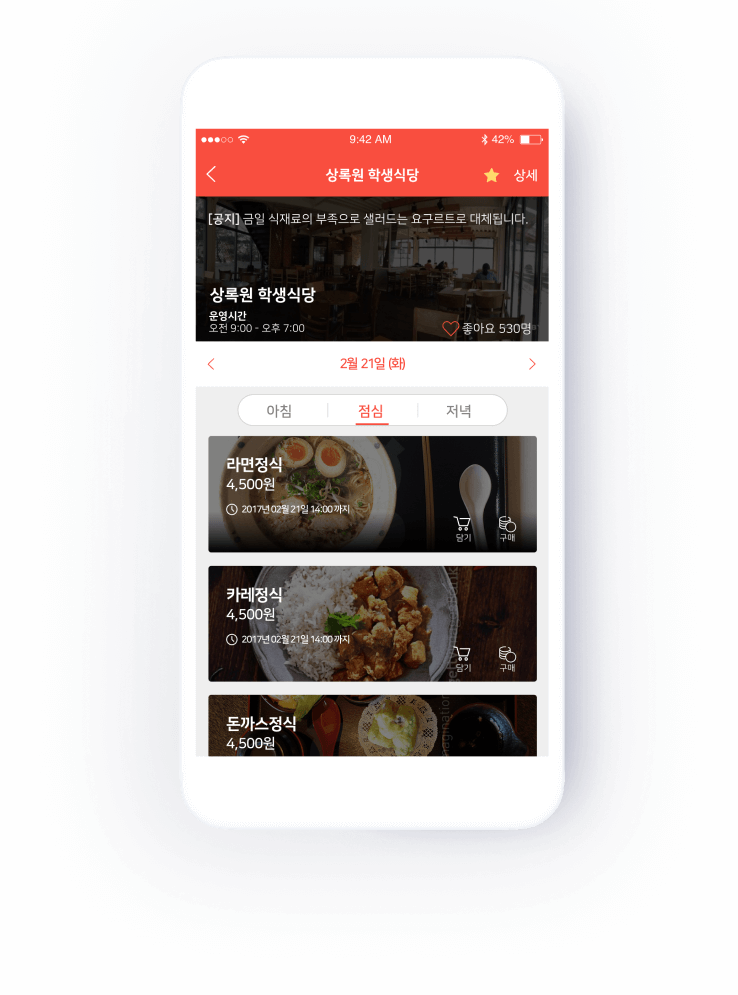
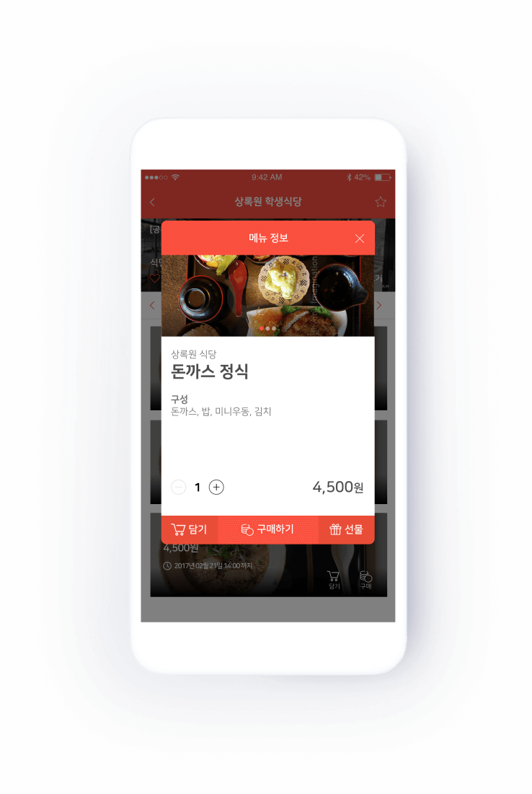
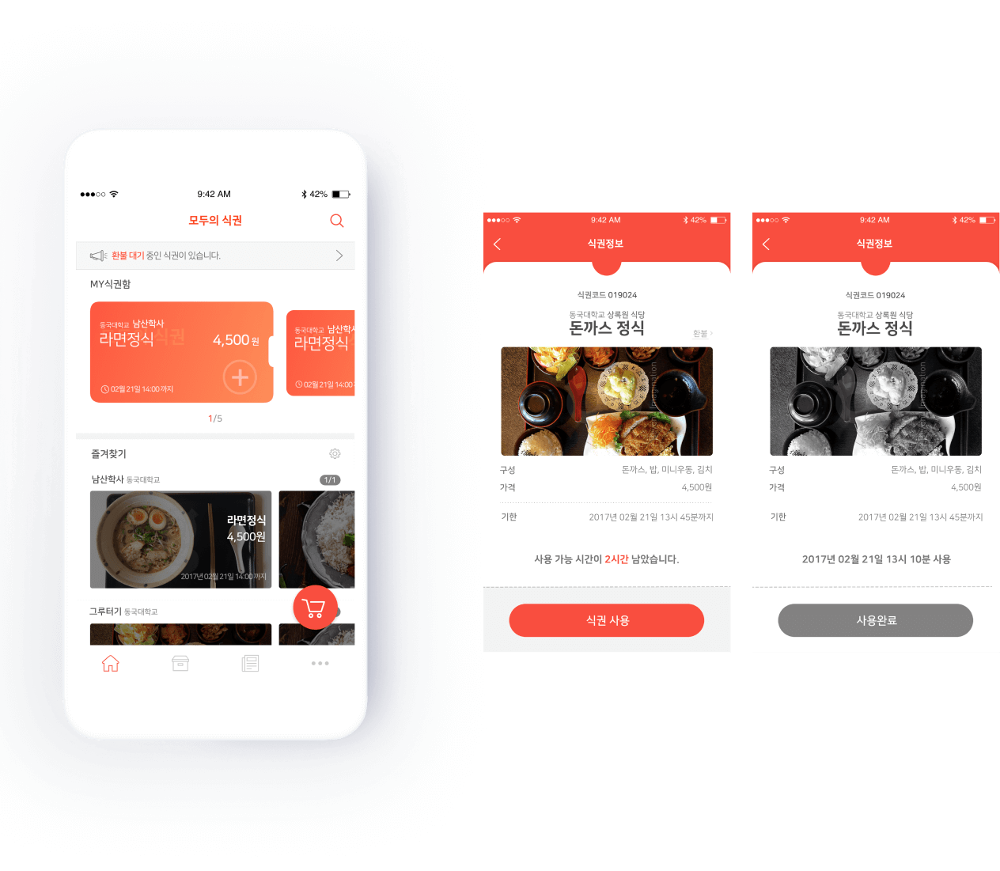
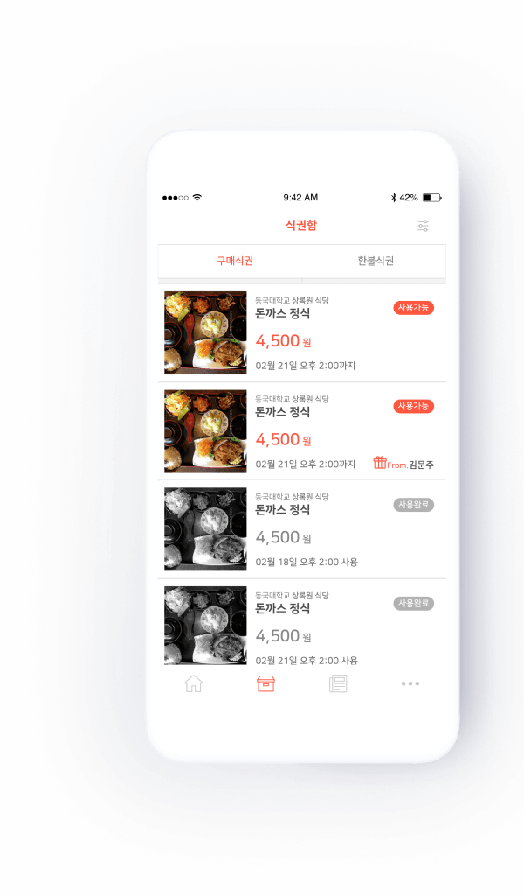
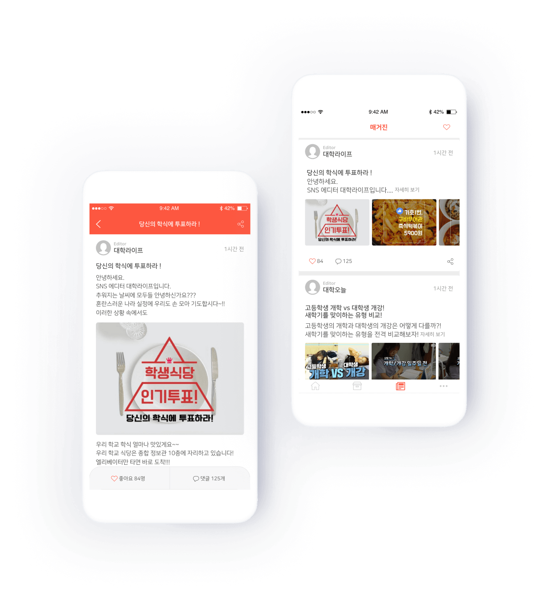

Design
Mobile App
UI/UX
2016.12
Overview & strategy
학식도 휴대폰으로 구매 또는 선물을 할 수 있다면? 모두의 식권은 식당으로 직접가서 식권을 구매하는 기존 방식이 아닌 좀 더 편리하고 스마트한 서비스를 제공하는 동시에 대학생만의 공감하며 소통할 수 있는 컨텐츠 공간을 구축하였습니다.
메인화면에서는 구매한 식권을 카드형식으로 보여주고 하단에는 즐겨찾는 식당의 당일 메뉴를 배치하여 사용자가 최소한의 터치로 목적에 도달할 수 있도록 구성하였습니다.
첫 이용단계에 자신의 학교를 검색하여 자주가는 식당으로 등록 후 메인에서 바로 접근이 가능합니다.
선택한 식당의 메뉴를 확인하고 모바일로 결제가 가능합니다.


구매한 식권은 사용가능시간이 임박한 순으로 메인 화면에 정렬됩니다. 식권함을 통해 구매식권 환불처리가 가능합니다.

또한 나의 식권들을 식권함에서 관리할 수 있습니다. 구매했던 혹은 구매하고 싶은 식권은 선물하기를 통해 지인에게 선물할 수 있습니다.

모두의 식권 에디터들이 올리는 유용한 대학 관련 게시글을 통해 유저간의 sns기능도 제공합니다.

여태 나의 구매한 식권의 데이터를 이용한 건강관리 기능까지 제공합니다.